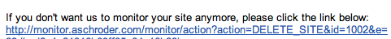

I took a bit of a break for the usual Magento development last weekend and had a crack at making a simple webstore monitoring app using Google App Engine. The application was made to monitor our webstores from a reliable, US network – and who more reliable than Google? So this blog post will detail the site monitoring app, and my thoughts on the Google app engine platform. I’d also invite anyone to try my app and let me know any thoughts you have on it, or how I could improve it.
UPDATE July 2011: I have since created a much more fully features Magento monitoring tool called magespeedtest.com – it checks speed and performance regularly and emails you if it differs from your preset tolerance. I won’t be adding new features to this monitor, it’s still free and I’ll keep it up and running for as long as it makes sense to, but any future development will be on MageSpeedTest.com.
I made the site monitor to be as simple as possible, and to be easily usable by anyone. It makes a simple HTTP GET request to each of the monitored sites every hour and emails the site admin to indicate if it is up or down, with a bit of helpful info if it’s down, and a time to make the request if up.
{kind=link}
For my use case I just set up a gmail filter that auto-archives the UP emails, as I just want to be able to periodically check the site is being monitored, but only actually care when it reports it being down. If you wanted to get really flashy you could even auto-forward the DOWN emails to some SMS gateway so you get a text notification.
Basically I’ll step through the way the app works below and comment on features of the app engine as I go.
Requesting a new monitor
The very small, very simple GWT frontend just submits the site details to the backend for validation and processing. The logic for submitting the sites checks for a url, name and email. It then checks the site is not already being monitored and that the given email is not already pending verification – to avoid spammers abusing this app.
The interesting part of that logic from the Google App Engine point of view is the queries to check for duplicates. You can see them below:
//... PersistenceManager pm = PMF.get().getPersistenceManager(); Query query = pm.newQuery(Site.class); query.setFilter("siteUrl == urlParam"); query.declareParameters("String urlParam"); try { List<Site> results = (List<Site>) query.execute(url); if (results.iterator().hasNext()) { return "Somebody is already monitoring that site!"; } else { } } finally { query.closeAll(); } query = pm.newQuery(Site.class); query.setFilter("adminEmail == emailParam && emailVerified == null"); query.declareParameters("String emailParam"); try { List<Site> results = (List<Site>) query.execute(email); if (results.iterator().hasNext()) { return "You must verify your email address before trying to monitor anymore sites!"; } else { } } finally { query.closeAll(); } //... |
For anyone looking to make an app in Google App Engine, I’d advise first reading and understanding the limitations of the query engine – make sure you allow for this when designing your data structures. It basically forces you to keep everything very simple, which in general is a good policy when developing any application.
Verifying a monitor
I’m using the Google App Engine email service to send out all of the emails, including the initial verification email.
public class EmailManager { public static boolean sendVerifyEmail(Site site) { String msgBody = "Hi," + //.. "Kind regards,\n" + "Ashley"; String subject = "Verify your site monitoring request"; return sendEmail(site, msgBody, subject); } //... private static boolean sendEmail(Site site, String msgBody, String subject) { Properties props = new Properties(); Session session = Session.getDefaultInstance(props, null); try { Message msg = new MimeMessage(session); msg.setFrom(new InternetAddress("name@email.com", "Ashley, Site Monitoring")); msg.addRecipient(Message.RecipientType.TO, new InternetAddress(site.getAdminEmail(), site.getAdminName())); msg.setSubject(subject); msg.setText(msgBody); Transport.send(msg); System.out.println("Sent email..."); return true; //... |
The service is easy to use, but the one gotcha I have found (at least on Mac OSX) is the email service does not log it’s messages in hosted/development mode (despite advertising otherwise!). So you have to assume the email service works, and then test it properly when you deploy the application the first time – that’s called testing in prod.
Stopping a monitor
To stop a monitor you simple follow the link in any of the emails you receive. I have created a separate servlet for handling these stop requests.
{kind=link}
This gives us a chance to show how to delete entities within the Google App Engine JDO framework. It will also give some insight into how I handle verification, and yes it’s not bullet proof!
private String deleteSite(String id, String hash) { PersistenceManager pm = PMF.get().getPersistenceManager(); String msg = ""; try { Site site = pm.getObjectById(Site.class, Long.valueOf(id)); if (site != null && site.hash().equals(hash)) { pm.deletePersistent(site); msg = "Monitoring canceled"; } else { msg = "Verification failed..."; } } finally { pm.close(); } return msg; } |
There’s nothing too interesting to report on my experiences with this, it’s pretty much as simple as it looks, get the object, delete it. done.
Actually monitor the site
This is probably the most important part of the application, and in fairness I’m not convinced I have the best possible code here yet, but I’ll be continually improving it.
This code uses the URL fetch service of the Google App Engine. The service is very easy to use, which is a recurring theme you’ll be noticing in this review. Here’s a snippet:
URL url = new URL(site.getSiteUrl()); URLFetchService urlFetchService = URLFetchServiceFactory.getURLFetchService(); HTTPRequest request = new HTTPRequest(url, HTTPMethod.GET, allowTruncate().followRedirects().setDeadline(DEADLINE)); long before = System.currentTimeMillis(); HTTPResponse response = urlFetchService.fetch(request); long after = System.currentTimeMillis(); if (response.getResponseCode() == 200) { EmailManager.sendSiteUpEmail(site, String.valueOf(after-before)); } else { if (failCount < TOLERANCE) { checkSite(id, ++failCount); } else { EmailManager.sendSiteDownEmail(site, "Response code: " + response.getResponseCode()); site.setUp(false); } } |
You’ll notice a couple of things here, 1) I’m recording how long the request takes, and conveniently including that in the UP email. 2) I’m allowing a threshold of failures because I found that either the App Engine, or my webserver was periodically timing out, but on manual inspection, everything was fine. So I now require the site to timeout several times in a row, in order to be considered DOWN.
The other important thing to note is I am using the queue service to actually queue up the various monitoring tasks. So each hour the cron service his the monitor url – which in turn causes the monitoring jobs to be enqueued.
So in a file called cron.xml I have this:
<cronentries> <cron> <url>/xxx/yyy</url> <description>Enqueue the monitoring tasks for this hour</description> <schedule>every 1 hours</schedule> </cron> </cronentries> |
and then I enqueue the tasks like this:
PersistenceManager pm = PMF.get().getPersistenceManager(); Extent<Site> extent = pm.getExtent(Site.class, false); Queue queue = QueueFactory.getDefaultQueue(); int i = 0; for (Site site : extent) { i++; if (site.getEmailVerified() != null) { queue.add(url("xxx") .param("id", String.valueOf(site.getKey().getId())) .param("action", "check") .method(Method.GET) ); } } extent.closeAll(); |
Then over the course of the next hour they get taken off the queue and executed, which involves actually make the web request to the specified URL.
So that’s it – how to build a simple website checker or Magento webstore monitor powered by the Google App Engine, in a few hours (OK, it took me more than a few, but it shouldn’t take you that long, now I’ve told you how to do it!). Or if you want to make my day, go try the application and suggest some features, or tell me what doesn’t work so well!
Next steps…
Well, I want to keep improving the monitor, I was thinking of several features:
- Adding detection of gzip/mod_deflate to help with optimising Magento
- Report the size of the response
- Include a graph of the response times over the last X days
- Keep an uptime calculation as a percentage and report that
- integrate with twitter or sms or some other instant messaging system
Let me know if you have any thoughts.
Wow – what a great solution! Thank you so much for sharing this!
One question I have – does this check if the Magento site is actually working, or just if the server is responding? I’ve had our site go down but show Magento’s error page, or even a MySQL max users database error, which doesn’t throw a “down” error on other monitoring services I’ve tried.
Thanks!
I think Magento’s error page sends a 500 error code, so my app will detect that, the database error may depend on what response code is sent. That said we could improve the monitor to actually do things like add to cart, or login as a test customer – to ensure actual functionality, not just responsiveness.
Why not use a service like pingdom. Simple, reliable, lots of features (charts, SMS/email alerts) 1 minute polling intervals.
Thanks for telling me about them, looks like a cool service, just too much of a cheapskate to pay for it!
Going to give this a go.
I think this is genius and generous.
Good man, thank you!
Hi Ashley,
sounds like an interesting project to me.
I would like to try it out on our GAE account. Do you provide the source code for download somewhere?
BR Tom
query.setFilter(“adminEmail == emailParam && emailVerified == null”);
above line with null is work?